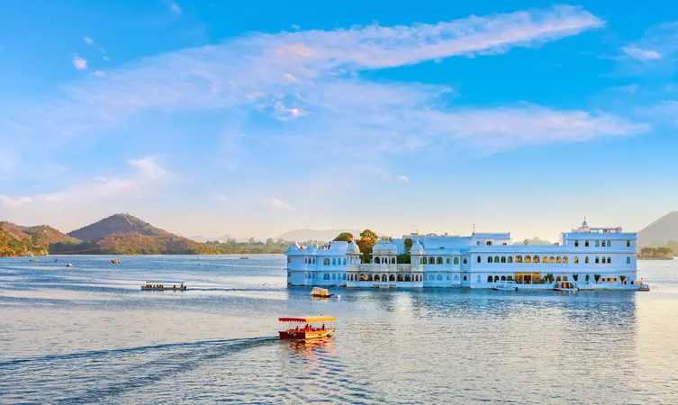
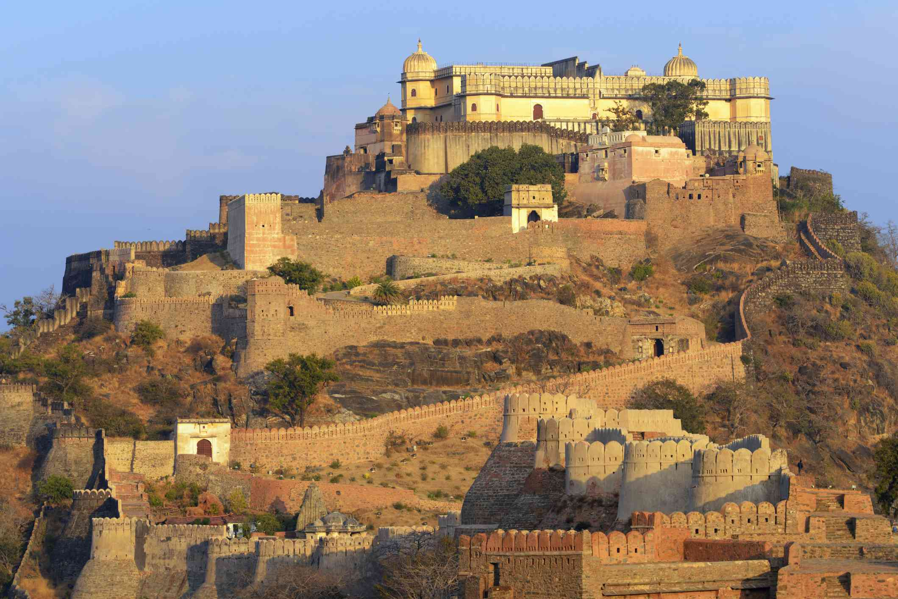
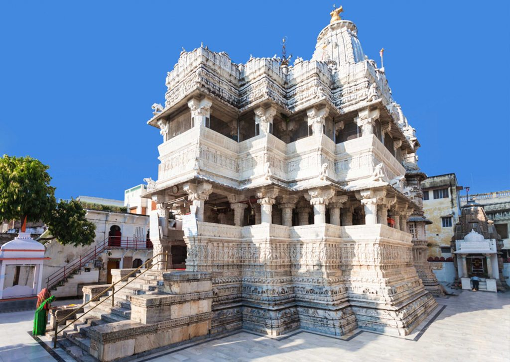
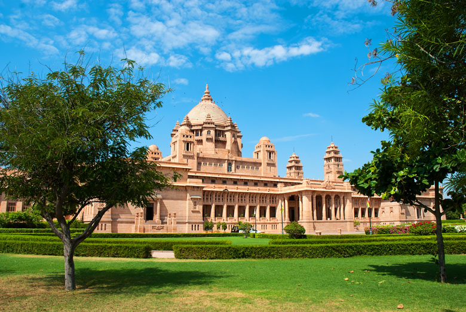
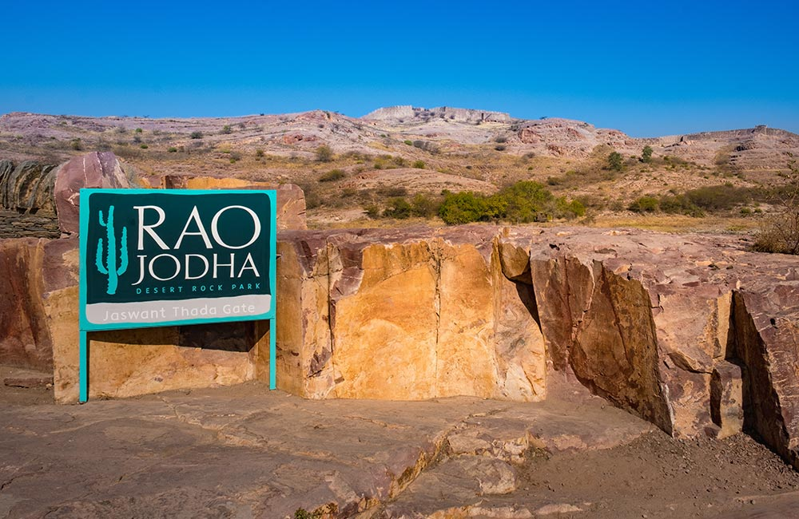
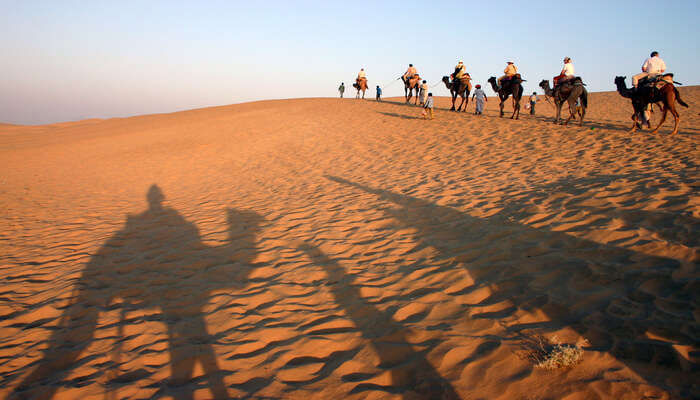
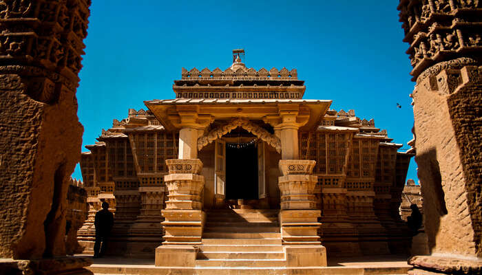

Udaipur Tourist Places
Udaipur, the beautiful capital of Mewar, Rajasthan, is a royal tourist destination for travellers who love history, culture and architecture.
The Lake Palace

The Lake Palace The Lake Palace in Udaipur is located on the Jag Niwas Island on a sprawling 1.5-hectare land.
This magnificent structure was built on the Lake Pichola by Maharana Jagat Singh in 1734.Once a summer palace for the royalty of Udaipur, it has now been converted into a heritage hotel.
The palace highlights include fountains, gardens, pillared terraces, painted mirrors, pink stone work, lotus leaves and cusped arches.
Dhola Mahal, Bada Mahal, Phool Mahal, Ajjan Niwas and Kush Mahal are some of the apartments in here.
Distance from the City:2 kms
Location: Pichola, Udaipur, Rajasthan 313001
Kumbhalgarh Fort

Kumbhalgarh Fort Built over a period of 15 years under the expert supervision of the famed architect of Kumbhalgarh Fort
Rajasthan named Mandan,it is perfectly perched between eleven peaks of the Aravalli ranges. Its strategic position atop a high ridge
camouflaged by the surrounding peaks has made it one of the most important and probably the only impregnable fort of the state.
Jagdish Temple

The Indo-Aryan Jagdish Temple owes its creation to the Maharana Jagat Singh. The temples in Udaipur lies near the City Palace’s Badi Pol entry and you have to go up through a few steps.
The black stone deity of Lord Vishnu will awe you and so will the brass Garuda image facing it.
There are many other shrines dedicated to the Sun God, Lord Ganesha, Lord Shiva and Goddess Shakti. The sunset Aarti will be a wonderful experience here.
Umaid Bhawan Palace

Your trip to Jodhpur would be incomplete without visiting the grand Umaid Bhawan Palace. Built in 1929 by Maharaja Umaid Singh, this palace is one of the largest private residences in the world.
It currently houses the royal residence, a luxury hotel and a family museum – the only part of the palace accessible to general public.
The extensive collection of memorabilia at the museum will take you through the fascinating 20th century history of Jodhpur kings.
Rao Jodha Desert Rock Park

A walking trail through the Rao Jodha Desert Rock Park will give you an insight into the plant life of the rocky trails of Rajasthan.
Spread over 170-acre area, this park was built in 2006 in an effort to restore the ecology of the wetland surrounding the iconic Mehrangarh Fort.
You can spot some unique forms of cactus here along with several other floral species.
Khuri – Adventurous Retreat

Just 50 km away from Jaisalmer, Khuri is a perfect getaway for the adventure lovers. People from across the world visit this place to explore Khuri sand dunes. Khuri is a small yet beautiful village located in the outskirts of Jaisalmer and is one of the many tourist places near Jaisalmer. It has very less population and a beauty of its own that leaves a mesmerizing impact on travelers. The desert of the area is popular for having rare flora and fauna.
Well connected to Jaisalmer, this village is popular for the traditional lifestyle and Rajasthani folklore that appeals to all. In the desert, one can go for some memorable camel rides. For ultimate entertainment, locals of this area often organize campfires that ensure an awesome experience to the tourists.
Lodurva – Marvelous Architecture

Located just 15 km to the northwestern region of Jaisalmer, Lodurva has gained immense popularity as one of the best places to explore nearby Jaisalmer. Known for its Jain temple, this area once served as the capital of the Bhatti Dynasty before Jaiswal founded Jaisalmer in 1156 AD.
Today’s Lodurva appeals to tourists for multiple reasons. As a tourist, you can explore its architectural ruins and the surrounding sand dunes. Some popular temples of this area include the famous Rishabhanatha Temple, Sambhavnath Temple, Hinglaj Mata Temple, Chamunda Mata Temple, and the Old Temple of Shiva amongst other Jaisalmer Temples.